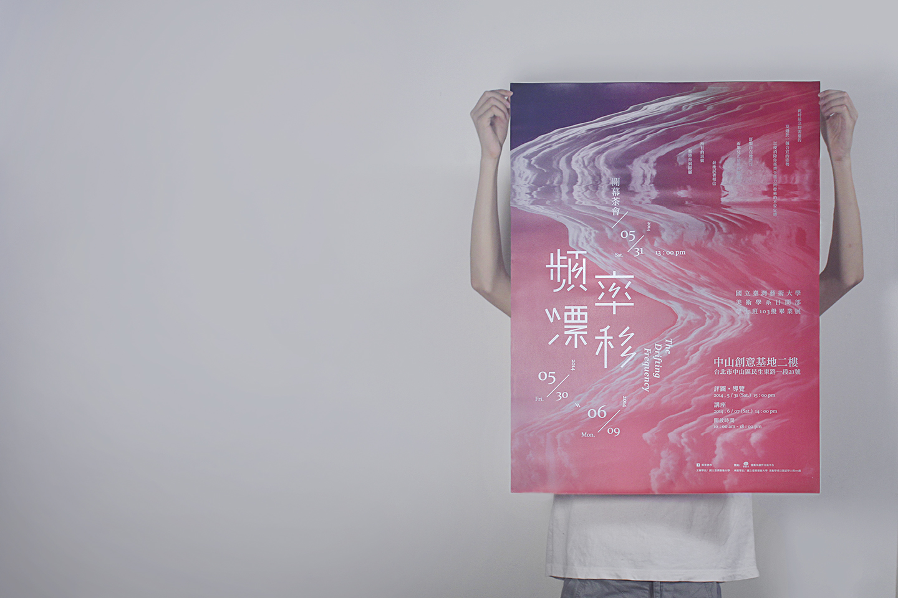
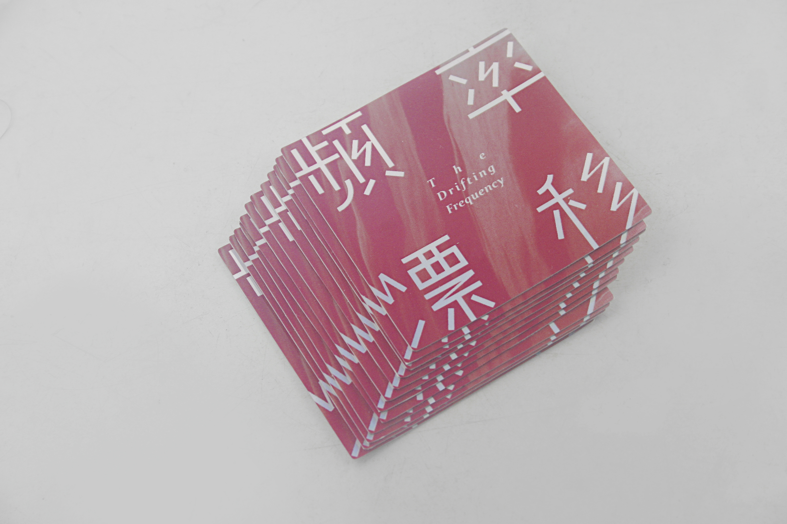
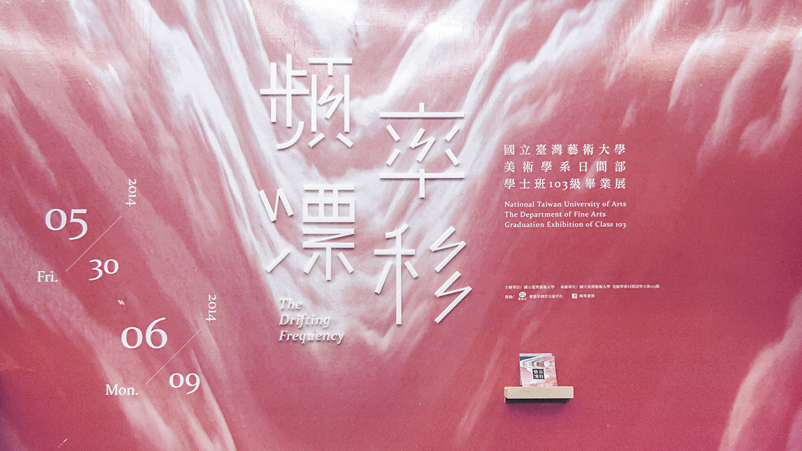
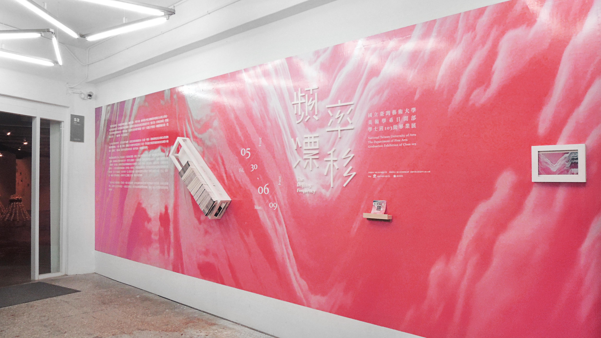

十九世紀初電報問世，在往後的年歲裡，信紙與墨水溶化消解為符號密碼，一點一劃一停頓。藉由反覆的創作行為，作品遂成一台電報收發器，連結了外在世界與內在心靈。創作者將一條條細長的頻率發射空中，望著它消散於一片訊號海，祝福它被觀眾打撈、被照料、被回應。
同時我們也持續攔截漂流中的頻率，分析、重現，長短波長、高低振幅，正確的甚或錯誤的，一切訊息都終將被解碼；何時收，何時放，伴隨著經驗積累，期許能夠透過作品將訊號傳遞的更遠更深，直至宇宙盡頭。但亦有時，信心遭受屏蔽，過多的慾望形成雜訊干擾叫人專注不得，於是一錯再錯，遍尋不著對的頻道，而頻率早已漂離了正軌，難以再度相遇。
而此時最急切需要的，莫過於一個合宜的姿勢，以便消除你那喪失重力所帶來的不安定感；舒服自在地漂浮，而那兒正是你的頻道──最後試著相信，所有的訊號都將得到歸屬。如此一來，它們終究會回到你的身邊。
- role
graphic design
- agency
國立台灣藝術大學 美術學系





